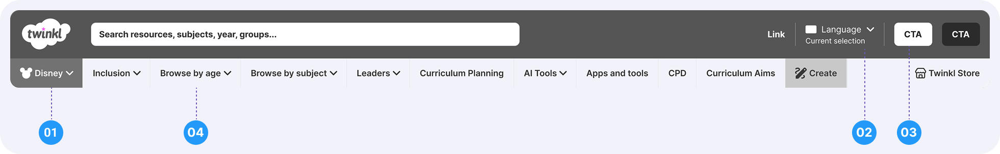
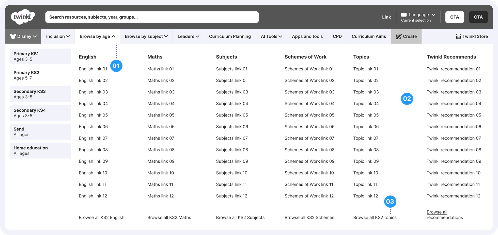
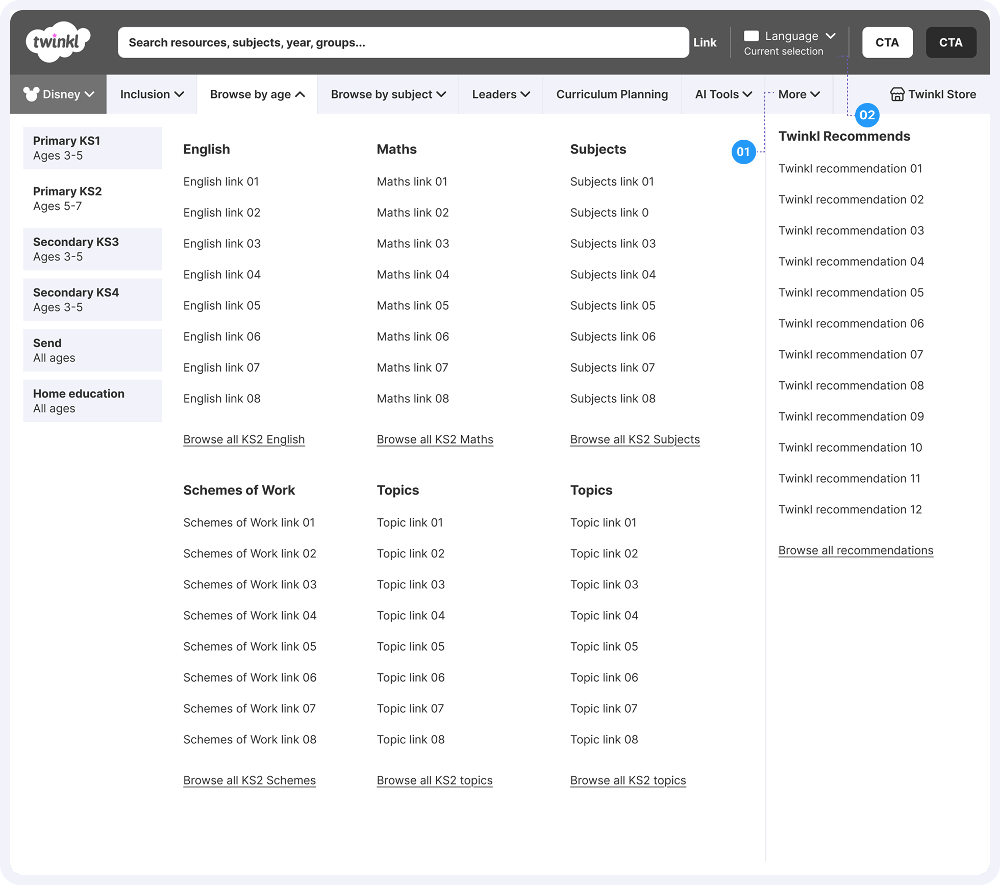
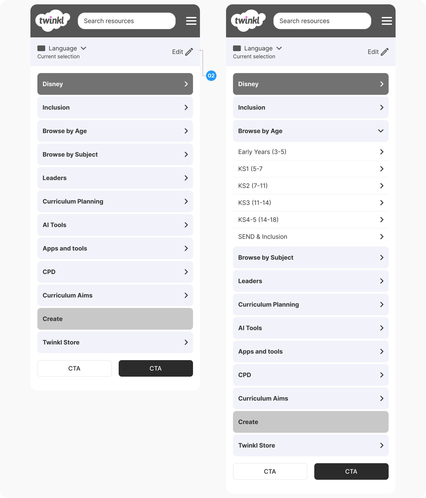
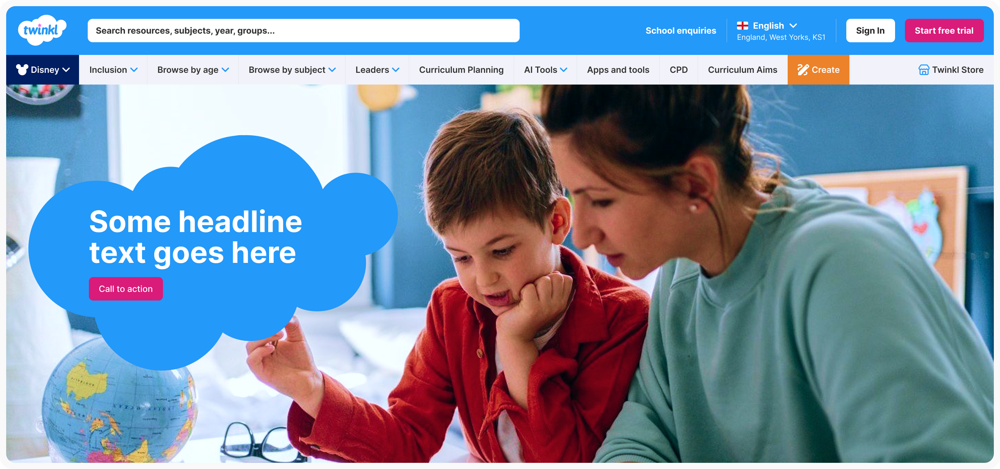
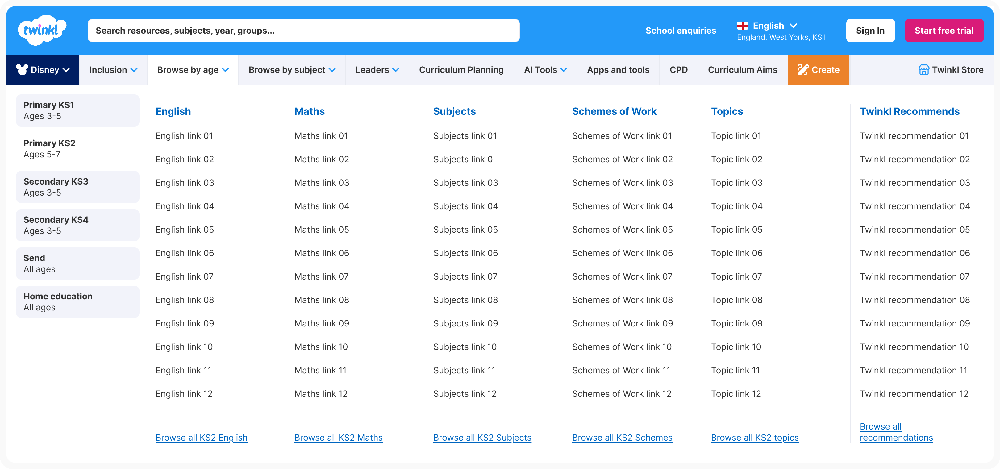
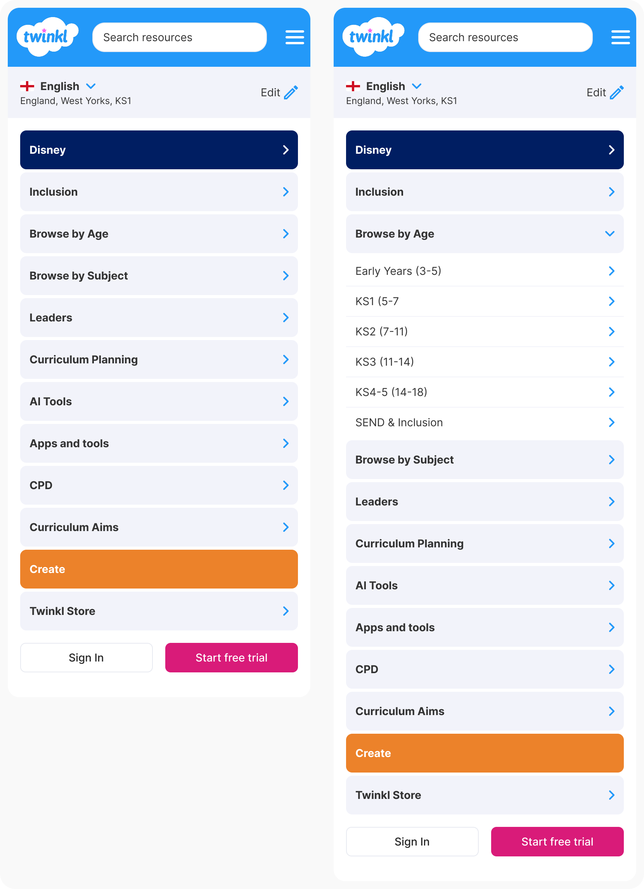

27th May 2026
Wireframe exploration of the proposed solution
Each design decision in the wireframes directly addresses a specific pain point identified in the heuristic review and user research. The exploration covers the navigation bar, mega menu, smaller devices, and a hi-fidelity pass.




Navigation prioritised
At narrower viewports, secondary items progressively move into a “More” overflow rather than truncating silently. Nothing disappears without signposting, ensuring the full nav remains discoverable at every screen width.
Language selector
The language selector now displays a text label and current selection at all times, resolving the accessibility failure on the existing site where an icon-only control had no accessible name for screen readers. At narrower viewports the label abbreviates but never drops to icon-only.



A clickable prototype built directly from the wireframes. Designed to support user testing and demonstrate the proposed interaction model. Responsive across desktop and mobile.
Click to open mega menu
Each nav item with a chevron opens the mega menu on click. Clicking the same item again or clicking outside closes it. This directly demonstrates the removal of hover-triggered behaviour identified as a key pain point.
Two-panel mega menu
Browse by age shows a left panel of Key Stages. Selecting one updates the right content panel instantly. Each column includes subject links and a “Browse all” shortcut at the bottom.
Simulated page navigation
Clicking any link in the mega menu closes the menu and updates the page content below, simulating a real navigation journey without requiring a full multi-page build.
Responsive — mobile and tablet
On smaller screens the desktop nav is replaced with a hamburger menu. Tapping it opens a hierarchical drawer: category › Key Stage › subject links, reflecting the mobile wireframe structure.